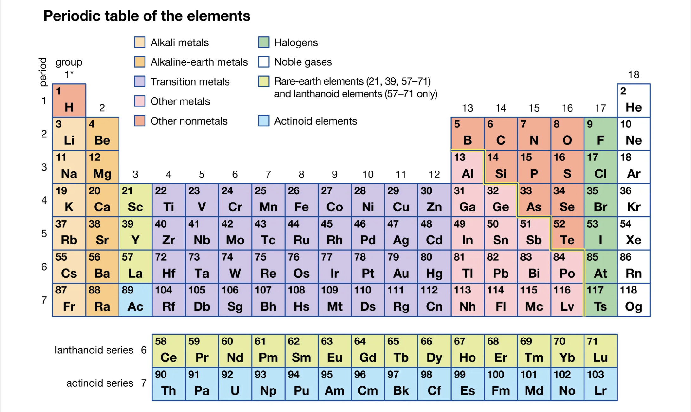
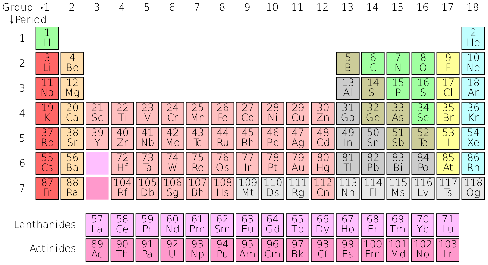

Historical Background
The periodic table was created by Dmitri Mendeleev in 1869. Mendeleev's genius lay in organizing elements based on their atomic mass and leaving spaces for elements yet to be discovered. His predictions about the properties of undiscovered elements were remarkably accurate, cementing the periodic table as a cornerstone of chemistry.
Structure of the Periodic Table
The periodic table is divided into rows called periods and columns called groups. Each element is arranged based on its atomic number, which represents the number of protons in its nucleus.
- Periods: Horizontal rows (1 to 7) represent the principal energy levels.
- Groups: Vertical columns (1 to 18) group elements with similar chemical properties.
Groups and Categories
The periodic table is divided into categories based on shared chemical and physical properties. Below is a detailed explanation of each category:
1. Alkali Metals (Group 1)
Alkali metals are highly reactive metals found in Group 1 of the periodic table. They include lithium (Li), sodium (Na), potassium (K), rubidium (Rb), cesium (Cs), and francium (Fr).
- Properties: Soft, low melting points, and highly reactive with water.
- Applications: Lithium batteries, sodium-vapor lamps, and potassium fertilizers.

2. Alkaline Earth Metals (Group 2)
Alkaline earth metals are less reactive than alkali metals and are found in Group 2. This group includes beryllium (Be), magnesium (Mg), calcium (Ca), strontium (Sr), barium (Ba), and radium (Ra).
- Properties: Harder than alkali metals, high melting points, and reactive but less so than Group 1 elements.
- Applications: Magnesium alloys, calcium supplements, and strontium for fireworks.
3. Transition Metals (Groups 3-12)
Transition metals are found in the center of the periodic table and include elements like iron (Fe), copper (Cu), and gold (Au). They are known for their ability to form colorful compounds.
- Properties: High melting points, excellent conductors of electricity, and form multiple oxidation states.
- Applications: Construction materials, electrical wiring, and catalysts in chemical reactions.
4. Post-Transition Metals
Post-transition metals include aluminum (Al), gallium (Ga), indium (In), tin (Sn), thallium (Tl), lead (Pb), and bismuth (Bi). These elements have properties between transition metals and metalloids.
- Properties: Malleable, lower melting points than transition metals, and less conductive.
- Applications: Aluminum for packaging, lead-acid batteries, and bismuth in medical applications.
5. Metalloids
Metalloids, or semimetals, have properties of both metals and nonmetals. Examples include boron (B), silicon (Si), and arsenic (As).
- Properties: Semi-conductive, brittle, and exhibit a mix of metallic and nonmetallic behavior.
- Applications: Silicon in electronics, boron in glass manufacturing, and arsenic in pesticides.

6. Nonmetals
Nonmetals are found on the right side of the periodic table and include elements like oxygen (O), nitrogen (N), and sulfur (S). These elements are essential for life.
- Properties: Poor conductors, brittle when solid, and form acidic oxides.
- Applications: Breathing oxygen, nitrogen fertilizers, and sulfur in rubber production.
7. Halogens (Group 17)
Halogens are highly reactive nonmetals found in Group 17, including fluorine (F), chlorine (Cl), bromine (Br), and iodine (I). They readily form salts with metals.
- Properties: Highly electronegative, form salts with metals, and exist in various states (gas, liquid, solid).
- Applications: Fluoride in toothpaste, chlorine for water purification, and iodine for medical antiseptics.
8. Noble Gases (Group 18)
Noble gases are inert gases in Group 18, including helium (He), neon (Ne), and argon (Ar). They are chemically stable due to their full valence shells.
- Properties: Colorless, odorless, and nonreactive under normal conditions.
- Applications: Helium in balloons, neon lighting, and argon for welding.
Importance of the Periodic Table
The periodic table is one of the most vital tools in the field of chemistry and science. It organizes all known chemical elements in a systematic way based on their atomic number, electron configuration, and recurring chemical properties. This logical arrangement helps scientists, researchers, and students understand the behavior and relationships between elements, making it easier to study chemical reactions and predict the properties of unknown substances.
Originally developed by Dmitri Mendeleev in 1869 and later refined by Henry Moseley in 1913, the modern periodic table arranges elements in order of increasing atomic number. Elements are grouped into periods (rows) and families or groups (columns), where elements in the same group share similar properties due to having the same number of valence electrons. This structure reveals periodic trends, such as reactivity, electronegativity, atomic size, and ionization energy.
One of the most powerful features of the periodic table is its ability to predict chemical behavior. For example, metals on the left side are generally good conductors and reactive, while nonmetals on the right tend to gain electrons and form acids. This predictive ability has helped scientists discover new elements, design chemical compounds, and develop materials with specific properties for use in fields like medicine, energy, and technology.
In education, the periodic table is a foundational tool that helps students visualize and understand key concepts in chemistry. It provides a concise summary of essential information for each element, including its symbol, atomic number, and atomic mass, making it easier to memorize and apply in calculations and experiments.
Moreover, the periodic table serves as a universal language in science, fostering collaboration across countries and disciplines. It supports innovations in chemistry, biology, physics, and environmental science by offering a reliable framework for exploring and understanding matter at the atomic level.
In conclusion, the periodic table is not just a chart — it is a cornerstone of scientific knowledge. It simplifies complex data, reveals patterns in element behavior, supports learning and discovery, and continues to guide researchers as they explore the unknown. Its importance in science is both timeless and irreplaceable.
Future of the Periodic Table
The periodic table has served as a foundational scientific tool for over a century, but its evolution is far from complete. As scientific research advances, particularly in the fields of nuclear chemistry, quantum mechanics, and space exploration, the periodic table will continue to grow and change.
One major area of development lies in the discovery of superheavy elements—elements with atomic numbers beyond 118. Scientists are actively attempting to create these elements in laboratories using particle accelerators. These elements may have unique properties that challenge our current understanding of chemistry and physics. Some theorists even predict an “island of stability” where superheavy elements could exist with relatively long lifespans.
Advances in computational chemistry and quantum computing may also transform how we classify elements. New groupings might emerge based on electron behavior at extreme energies or in exotic conditions, such as those found on other planets. This could lead to an expansion or reorganization of the periodic table.
In education, the periodic table may become more interactive and immersive through augmented reality (AR) and virtual simulations, making it easier for students to visualize atomic structure and element behavior in 3D.
Moreover, as humans explore space and potentially mine asteroids or other celestial bodies, we may discover new elements or isotopes not found on Earth. This could further expand the table and our knowledge of matter in the universe.
In conclusion, the periodic table will not remain static. Its future is dynamic and exciting, driven by scientific discovery, technological innovation, and the unending curiosity of humankind. It will continue to evolve as a living document of the elements that shape our universe.